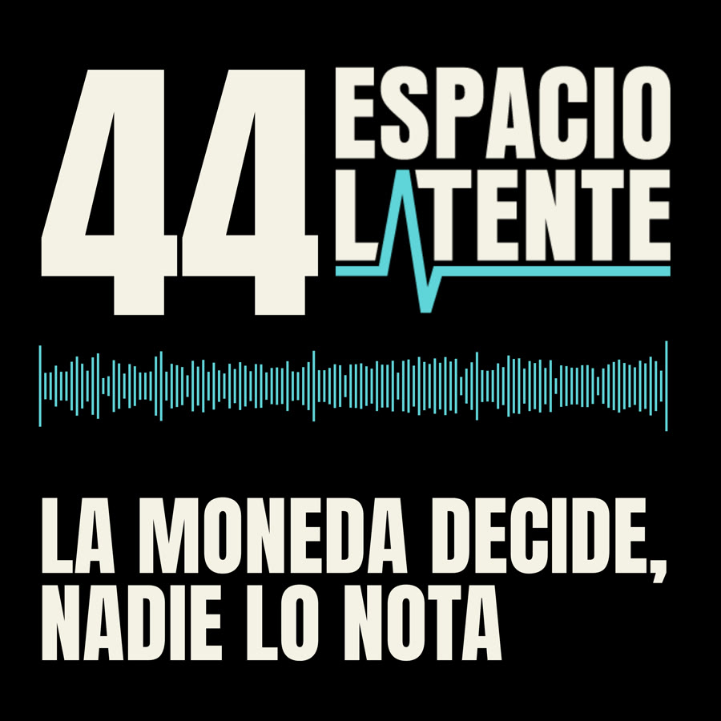
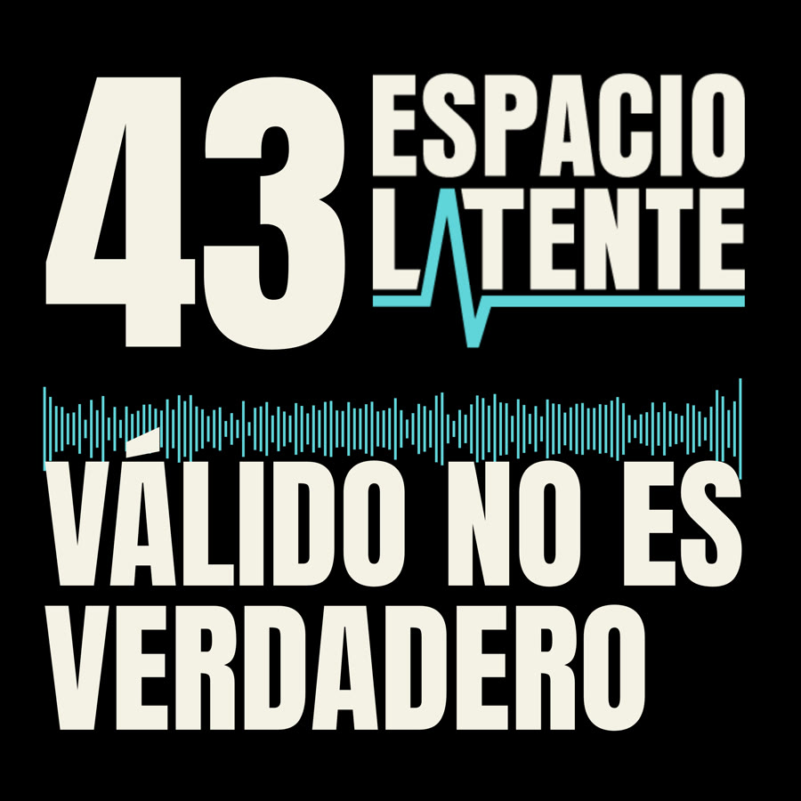

Escuchar en Spotify
Semanario oficial de IA
Todos los episodios
Cada semana, lo más importante de la inteligencia artificial con sus fuentes. Aquí están las notas y el PDF de cada episodio.
-

La moneda decide, nadie lo nota
Anthropic enseña sus cuentas para salir a bolsa y un experimento muestra que cincuenta analistas expertos siguieron a su agente de IA sin saber que su preferencia la había decidido una moneda. Además, un modelo abierto de un billón de parámetros y otro que programa sin conexión.
-

Válido no es verdadero
Getty Images se declara en quiebra, dos equipos con IA encuentran el mismo agujero en el motor de buena parte de la web y una pregunta incómoda: qué nos pasa cuando una máquina siempre nos da la razón.